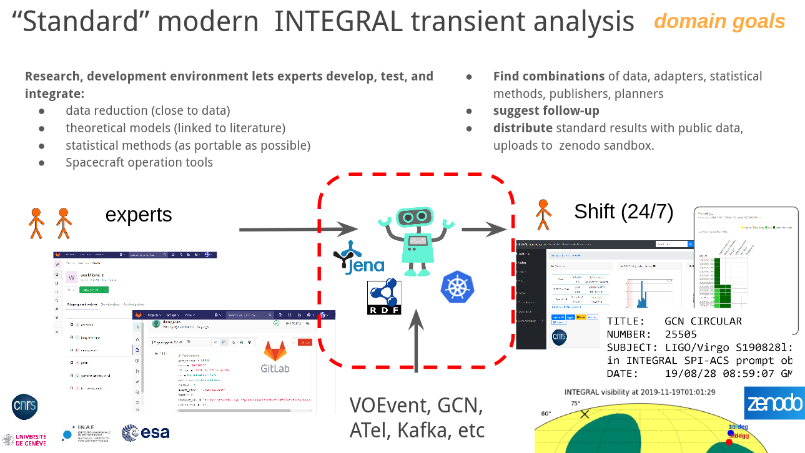

Workflow Publishing and Discovery with KG: Astronomer Guide #
| Latest-Version | https://github.com/oda-hub/workflow-discovery/, also deployed as https://odahub.io/ |
Purpose of this note #
We want to demostrate on concrete and scientifically-useful working examples how an astronomer, who might indeed have relatively little interest to look in the code, can leverage ODA Knowledge Base and Knowledge Graphs together with other valuable resources (especially Renku):
- collaborate on workflows
- discover and use ODA-built services
- discovery and use our record of globally available web-based data analysis services
- easily contribute your own analysis as web-servces
- annotate your work in the ways ready for consumption by the synthetic astronomer robots, making some of the reasonable reasoning for scienstics, and most of all, support scientists with discovery space empowering their irreplacible scientific capacities.
It’s clear that much of this functionality is available in other frameworks, usually custom for purpose. We make use of many the re-usable open-source technologies, to support an ecosystem of tools and other developments, which can be re-used between some of our projects.

Developing the workflow #
The simplest way to build a workflow is to write a jupyter notebook. We will not go in every details here, see dedicated guide for step-by-step instructions.
Instead, this document here focuses on workflow annotation, publishing, and discovery. These features are powered by an RDF Knowledge Graph. What exactly is stored in the Knowledge Graph, is described by the ontologies (which are themselves stored in some KG).
Ontology #
We will describe here the simplest elements of the ontology, which are necessary for workflow annotation. We will not go into details about how to define various constrains and relations on/between things here.
Ontology describes relations between some things, terms (represented as RDF URIs). URI can look like a URL, e.g. https://odahub.io/ontology/sources/Mrk421 (the URL may or may not be leading to a real location, although it generally should). The URI can be also shortened, assuming a namespace prefix:
PREFIX odaSources: <https://odahub.io/ontology/sources#>
(see some default list of prefixes here)
This way, https://odahub.io/ontology/sources/Mrk421 becomes odaSources:Mrk421.
It is necessary to annotate the workflow with these terms. Specifically, to make relations between the workflow and these terms. Relations have a form of simply propositions, expressed as subject-predicate-object triples.
For example
oda:sdssWorkflow oda:isImportantIn oda:radioAstronomy .
or
oda:sdssWorkflow astroquery:uses astroquery:sdssArchive .
oda:sdssWorkflow oda:isAbout odaSources:Mrk421 .
Consider that it is benefitial to use terms already used by other people, described in existing ontologies. This way we speak in the same language as other people, and will be able to more easily combine our resources. However, it can be quite an effort to understand what other people meant, which is necessary to use their terms correctly. This effort should be made conciously when possible. It is advisable to also discuss unclear points withing our group, and come to a common solution.
Particular attention should be paid to International Virtual Observatory (IVOA) vocabulaires. See their rdf vocabularies here: https://www.ivoa.net/rdf/index.html and references therein. Developments used in variety of tables managed by CDS-Strasbourg, where much of the needed terms for astrophysical entities can be found (one can start here).
It is however, often important to adopt project-specific narrowed-down scope. For example, our understanding of what an AGN is, may differ from that of CDS-Strasbourg. Which is why, in unclear cases, we should not hesitate to use custom terms, such as odaSources:AGN. Then, we can also model and encode equivalence between our own understanding of the AGN with that of CDS. For example, as so:
odaSources:Mrk421 oda:isSubclassOf odaSources:AGN .
odaSources:AGN oda:equivalentTo cds:AGN .
Later, these equivalences can be reduced under specific assumptions: for example some agent may assume that oda:equivalentTo implies literal substitution in all contexts.
Workflow inputs #
For our purposes, the most important workflow properties are set by their inputs and outputs.
We will use nb2workflow (commands below will need pip install nb2workflow) to add addition details and instrospection on the workflow notebooks.
name_input = "Mrk 421" # name of the object; if empty coordinates are used http://odahub.io/ontology/sourceName
radius_input = 3.0 # arcmin
They can be see for example with
$ nbinspect final.ipynb
...
"name_input": {
"comment": " name of the object; if empty coordinates are used http://odahub.io/ontology/sourceName",
"default_value": "Mrk 421",
"name": "name_input",
"owl_type": "http://odahub.io/ontology/sourceName",
"python_type": "<class 'str'>",
"value": "Mrk 421"
},
...
"radius_input": {
"comment": " arcmin",
"default_value": 3.0,
"name": "radius_input",
"owl_type": "http://www.w3.org/2001/XMLSchema#float",
"python_type": "<class 'float'>",
"value": 3.0
}
...
Notice how in the first case, owl_type (OWL being the ontology definition language) is derived from the comment. And in the second case, it is derived from the variable type.
To generate a graph from the notebook:
$ nb2rdf final-an.ipynb final.rdf
This graph can be viewed, for example, with WebVOWL. It can also be published in a common location (see nb2service --help).
TODO: show command to publish
Workflow properties from capturing workflow behavior #
Renku (with a renku plugin) is currently able to deduce that workflow uses some algorithms, providing basis for useful automatic annotation. Current plugin is dedicated to ML algorithms.
We expect in the future to make an ODA-specific (or, more generally, astrquery-specific) renku plugin.
Other Domain-specific knowledge #
It is possible to assign any other characteristics to the workflow. It should be seem in case what makes sense. We used oda:importantIn predicate to assign relevance to some domains, e.g. domain:transients. In many cases these predicates can be assigned based on reasoning rules.
From Workflow to Web-Based Data Analysis #
We made a simple tool to present an HTTP service executing given notebook on demand. See https://github.com/oda-hub/nb2workflow
Reasoning workflows #
Reasoning is transformation of knowledge.
Since our knowledge base is the knowledge graph, our reasoning is transformation of the knowledge graph.
I know, it may sound ambitious and unreasonable to claim capacity of out platform to reason. However, this terminology has been accepted in the community. This restricted form of general reasoning.
Ingesting data into the graph also transforms the graph. Moreoever, workflows ingesting data may be guided by the present, graph content. When possible, we separate reasoning from external source ingestion by ingesting first, and reasoning later: this allows to preserve. But it is not always feasible.
Reasoning is performed by executing these reasoning workflows: in response to external triggers, or just regularly.
Workflow exection #
Curiusly, it is very convenient to see worklow execution as reasoning. See more details.
Other reasoning rules #
Various standard reasoning rules can be applied.
Literature #
Literature parsing #
Simple workflows to read astronomical and arxiv publications and produce some RDF.
https://github.com/oda-hub/literature-to-facts
Literature building #
Integrating data into paper. Adding another compile step deriving data from various sources (a lot of the time - workflow executions) and producing macroses for the latex.
Made use-case first, for the easist possible latex work.
https://github.com/oda-hub/linked-data-latex
Human interventions into the KG #
Human agents are first-class citizens in the ODA KB/KB, on paar with the automated workflows. Humans are not very reproducible, but provide unique intuitively-guided inputs, owing to their own built-in very large but a bit vague Knowledge “Graphs”. Key aspect of our development here is to allow data and workflow interoperability. It is only natural that we are concerned with human-ODA unteroperability. Technically, we implement human interactions are implemented in the same way workflow executions.
Most Humans experience the KB through various frontends. These multiple light-weight frontends allow making pre-defined actions, leading to workflow excutions.
Some pre-built frontends for develoment needs are presented here:
https://in.odahub.io/odatests/
Viewing computed workflows #
As described in the details on reasoning engine computed workflows are fully curryied workflows are equivalent to simple data-fetching workflows.
Adding a workflow #
it should be as simple as pushing a button. They could be synchronized from Renku. If Renku will provide simple a limited public graph, we could directly use it, without reproducing it part of it in ODA KG.
Example of adding new workflow which reacts on astro transients #
TODO